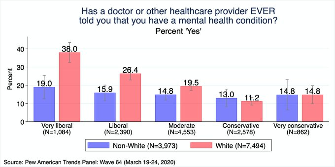
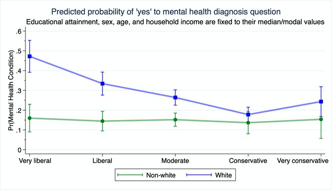
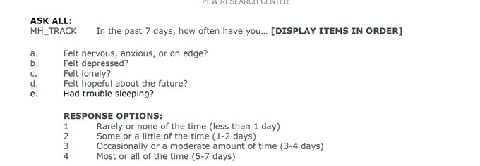
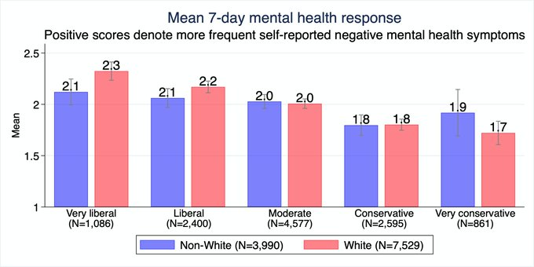
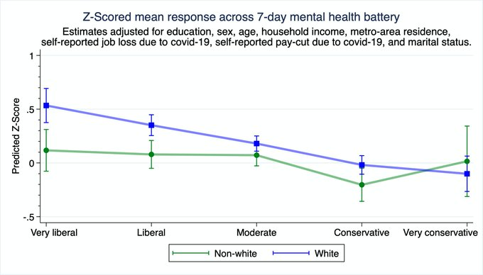
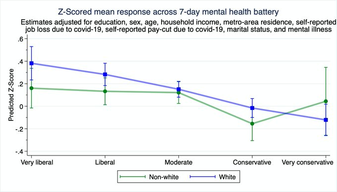

A „nagyon liberális” nézeteket vallók közt több a mentális problémákkal küzdő személy a Pew Institute márciusi felmérése szerint. A fiatal, magukat nagyon liberálisnak tartó, fehér bőrű nők körében ez az arány különösen magas. Több érdekes eredmény is született a Pew Intézet 2020 márciusi, COVID-19 kapcsán végzett felmérésének elemzésében, melyet a Tablet Magazin szerzője, Zach Goldberg politológus doktorandusz összegzett. Eszerint a fehér bőrű lakosság (és különösen a „nagyon”) liberálisok sokkal nagyobb valószínűséggel rendelkeznek mentális egészségi problémák diagnózisával, mint az összes többi ideológiai és faji alcsoport - írja a mandiner.hu.
Mondta már orvos vagy egészségügyi dolgozó valaha, hogy mentális egészségügyi problémái vannak? (Igennel válaszoltak százaléka)
Százalékos aránya az "igen"-nel válaszolóknak a mentális egészségügyi probléma kérdésre
A következő kérdéssort kellett kitöltenie a felmérteknek: Az elmúlt 7 napban, milyen gyakran... a) volt ideges, aggódó, izgatott? b) volt letört? c) volt magányos? d) volt reményteli a jövővel kapcsolatban? e) volt problémája alvással? (Kék: Nem fehérbőrű ember, Piros: Fehérbőrű)
  Szélső baloldali - Baloldali - Független - Jobboldali - Szélső jobboldali
(Kék: Nem fehérbőrű ember, Piros: Fehérbőrű)
Szélső baloldali - Baloldali - Független - Jobboldali - Szélső jobboldali
(Zöld: Nem fehérbőrű ember, Kék: Fehérbőrű)
Kérdéseinkre érkezett válaszok negatív értékeinek átlaga (minél kisebb, annál jobb)
Z-Pont visszajelzések a 7 nap alatt mentális betegségről
Z-Pont visszajelzések a 7 nap alatt mentális betegségről, de a megállapító intézmények szűrésével (kicsit pontosabb eredményért)
  Szélső baloldali Baloldali Független Jobboldali Szélső jobboldali
(Kék: Nem fehérbőrű ember, Piros: Fehérbőrű)
Szélső baloldali - Baloldali - Független - Jobboldali - Szélső jobboldali
(Zöld: Nem fehérbőrű ember, Kék: Fehérbőrű)
Szélső baloldali - Baloldali - Független - Jobboldali - Szélső jobboldali
(Zöld: Nem fehérbőrű ember, Kék: Fehérbőrű)